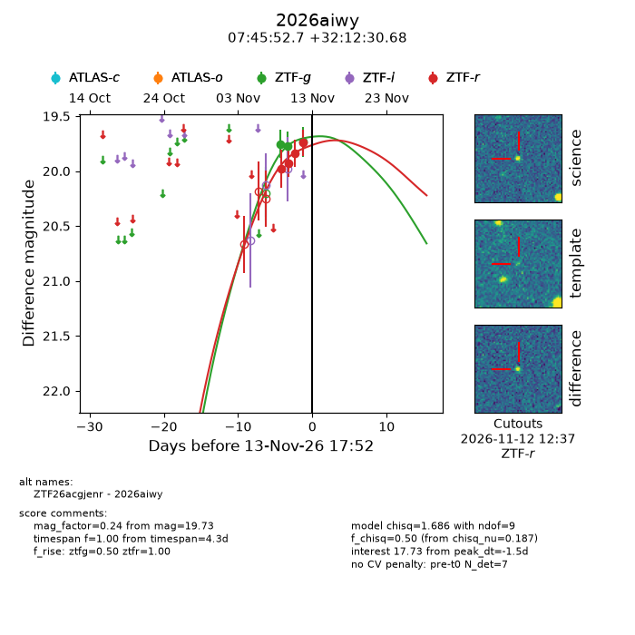
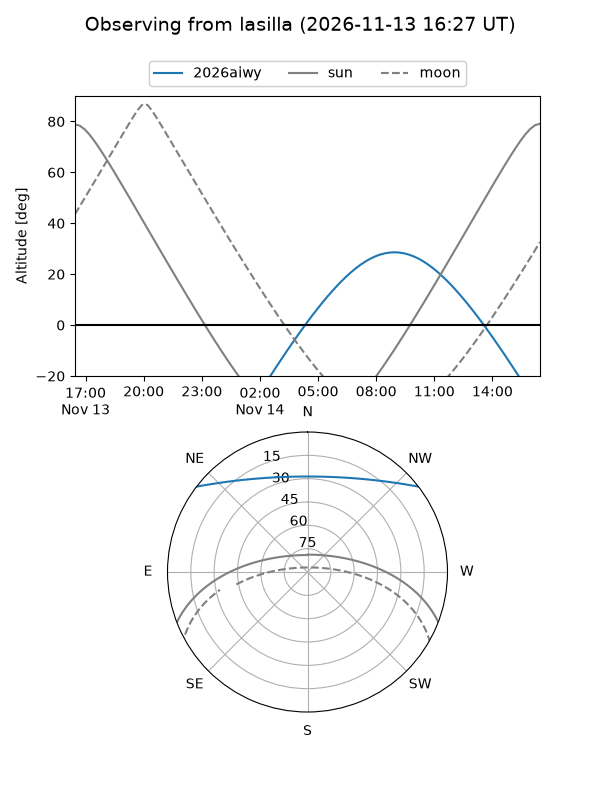
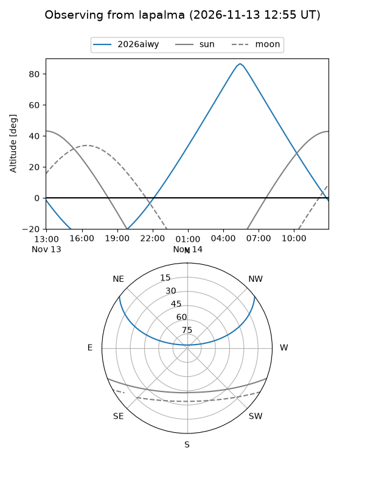
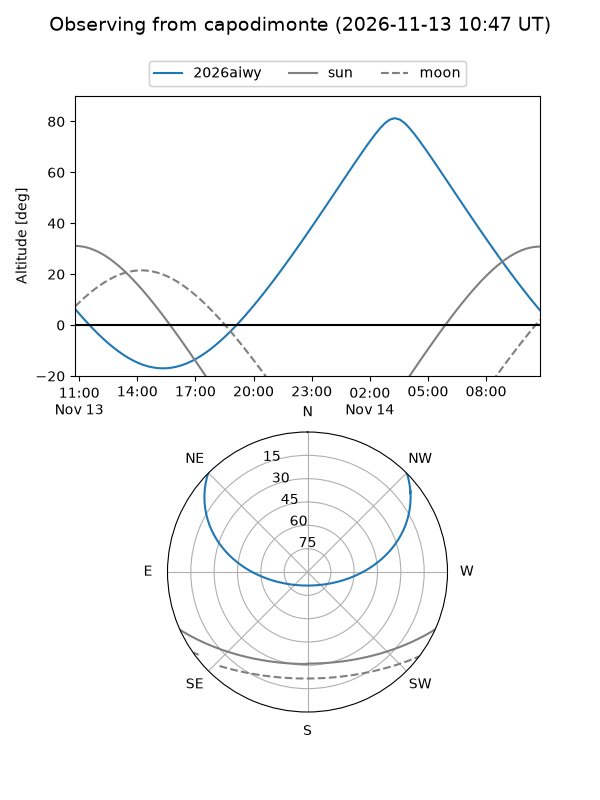
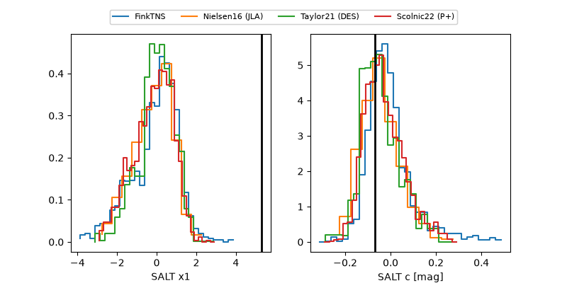

2026aiwy
Target 2026aiwy at 2026-11-13 17:58
Aliases and brokers:
FINK-ZTF: ztf.fink-portal.org/ZTF26acgjenr
Lasair-ZTF: lasair-ztf.lsst.ac.uk/objects/ZTF26acgjenr
ALeRCE-ZTF: alerce.online/object/ZTF26acgjenr
YSE-PZ: ziggy.ucolick.org/yse/transient_detail/2026aiwy
TNS name: wis-tns.org/object/2026aiwy
Direct TNS query: direct search
alt names
ZTF26acgjenr (ztf,fink_ztf)
2026aiwy (tns,yse)
Coordinates:
equatorial (ra, dec) = 116.4694,+32.20852
equatorial (HMS+DMS) = 07:45:52.66,+32:12:30.68
galactic (l, b) = (187.9257,+24.84955)
Flags:
peak dt: -1.5
Photometry:
last ztfg=19.73, ztfr=19.74
3 ztfg, 4 ztfr detections
Lightcurve

Visibility



Additional plots
